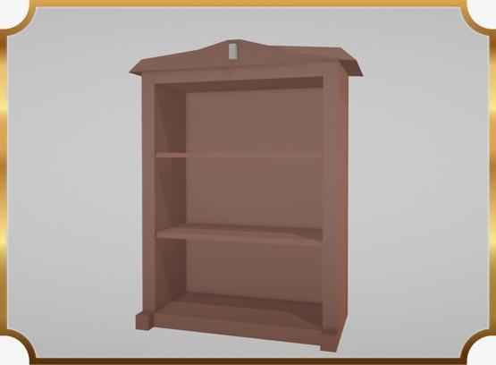
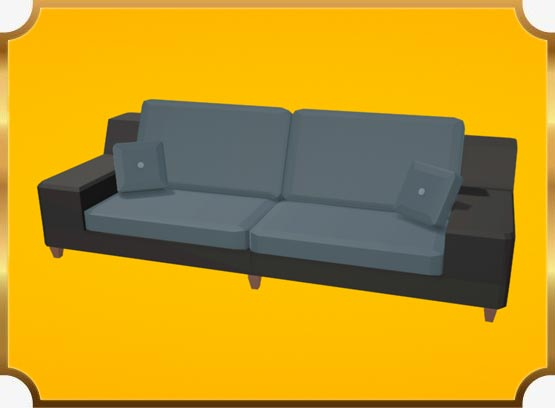
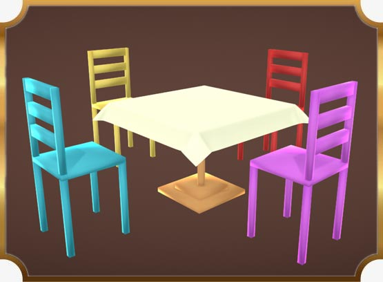
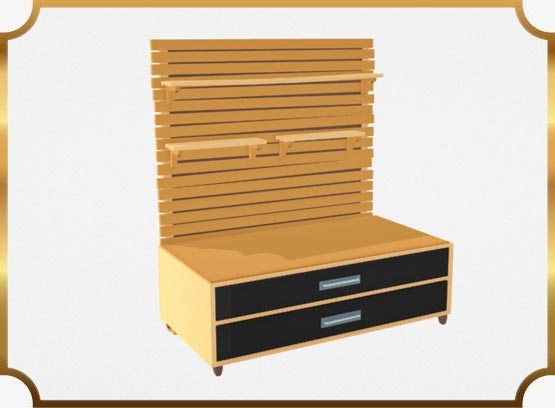
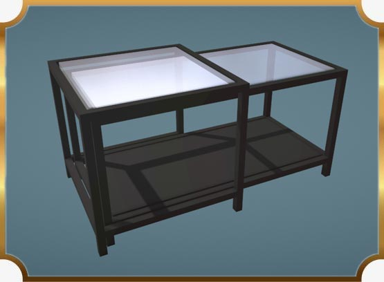

Clicca qui per scaricare il marker, stampalo su un foglio A4 e posizionalo nella stanza
Seleziona il modello e vedi prima di acquistare!

Libreria

Divano
Scaffale

Tavolo con sedie

Cassettiera con mensole

Tavolino di vetro